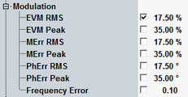

Transmit Modulation Limits
A poor modulation accuracy of the UE transmitter increases the transmission errors in the uplink channel of the network and decreases the system capacity. The error vector magnitude (EVM) is the critical quantity to assess the modulation accuracy of a UE.
According to 3GPP, the EVM measured at UE output powers ≥ −40 dBm must not exceed 17.5 %.
The EVM limits can be set in the configuration dialog, along with limits for the other measured quantities.

Modulation limit settings